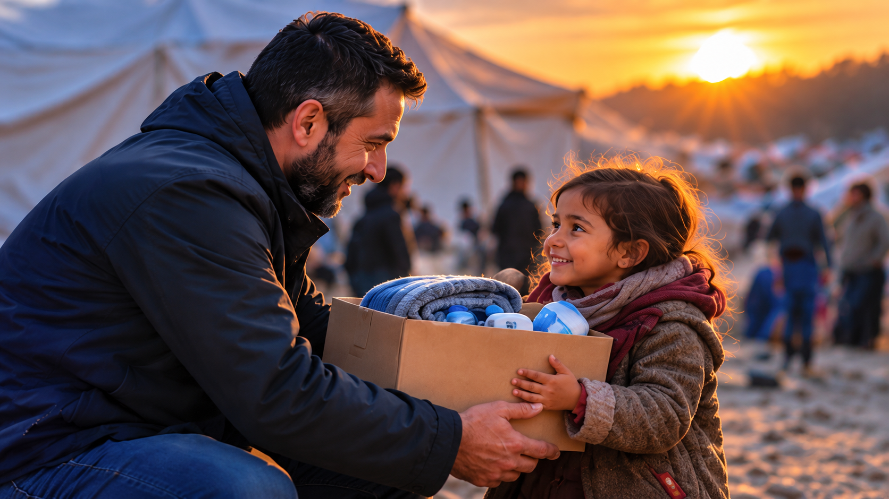
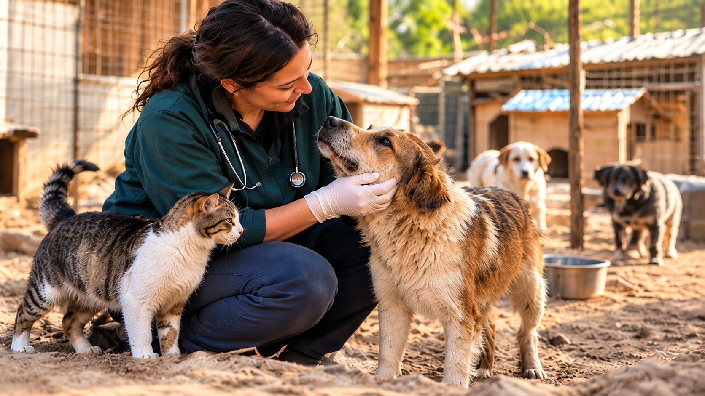

Our Mission
Our mission is to give a voice to the voiceless, support people in need, protect vulnerable animals, safeguard our environment, and inspire collective action toward a more compassionate and just world.
OUR COMMITMENT
Protecting livesInspiring hopeCreating change
Who We Are
Your Global Voice is a nonprofit organization based in New York, United States, committed to providing humanitarian assistance, defending human dignity, and protecting animals and the environment to help build a more compassionate, just, and sustainable world. We believe that compassion knows no boundaries and that every act of kindness has the power to change lives.

Hope for Every Life
Our humanitarian efforts are dedicated to assisting individuals, families, and communities facing poverty, illness, displacement, emergencies, and other hardships. Through our programs and projects, we seek to provide essential support, relieve suffering, save lives, and restore hope. We believe that assistance should be guided by human need, without discrimination based on religion, race, ethnicity, nationality, gender, or background.
Dignity for All
We are equally committed to assisting individuals facing persecution, discrimination, and injustice because of their religion, race, ethnicity, nationality, beliefs, or identity. Through advocacy, awareness, and practical assistance, we seek to defend fundamental rights, uphold human dignity, and support those whose safety, freedom, and equal treatment are threatened. No one should face persecution or injustice simply for being who they are.

Every Life Matters
One of our fundamental purposes is the protection and welfare of animals, guided by compassion and respect for all living creatures. We strive to rescue and protect animals suffering from cruelty, abuse, neglect, and abandonment. Through rescue initiatives, veterinary assistance, shelter projects, and responsible adoption programs, we aim to provide essential care to animals in need. By promoting kindness and responsible care, we seek to save lives and build a world where animals are treated with compassion and respect.
A Greener Tomorrow
Equally important to our mission is protecting the environment and preserving our planet for future generations. We seek to protect forests, conserve natural habitats, prevent environmental destruction, and promote responsible care of our natural resources. Through environmental projects, education, and community participation, we aim to inspire collective responsibility and contribute to a healthier, greener, and more sustainable world.
One World, One Shared Responsibility
At Your Global Voice, our mission is to stand for those whose voices go unheard, support people in need, protect vulnerable animals, and safeguard our planet for future generations. We believe that through compassion, unity, and action, we can make a lasting difference.
MY VOICE + YOUR VOICE = OUR VOICE
Be Part of Our Mission
Discover the causes we champion and the projects we undertake. Explore how you can become part of our mission, take meaningful action, and help us build a world where compassion brings hope, protects lives, and inspires lasting change.
Support Our Mission
We need your support to make a lasting difference. Whether through donations, volunteering, sharing our message, or lending a helping hand, you can contribute to our efforts in humanitarian assistance, human rights advocacy, animal welfare, and environmental protection. Every act of kindness matters, and together, we can turn compassion into action and build a better future.